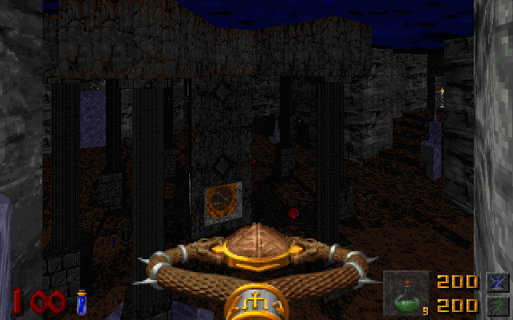

Realm of Carnage is a Deathmatch Mappack that consists of 13 levels. Each level is unique in it's own way, whether it be with item re-population, map hazards, secret rewards, etc. The level aesthetics in Realm of Carnage attempt to not stray far from that of original Hexen so you get a classic 1995 feel while playing. All maps made by Seidolon except MAP06 and MAP11 which are designed by auratoostronk and touched up by Seidolon.
DOWNLOAD:
RealmOfCarnageV1.75.zipCyrgoth's Manor is a 7 level singleplayer WAD for HEXEN, designed for GZDoom and Zandronum. It is compatible with any Hexen gameplay mod because it uses no new resources. Cyrgoth's Manor was also designed with Co-op in mind and the maps are also optimized for deathmatching modes as well. It contains 1 secret level in addition to the 6 mandatory levels. There are secrets in this WAD, however, like in Hexen, they are unmarked, so good luck finding all of them!
DOWNLOAD:
CYRGOTH3.zipCyrgoth's Revenge is an 8 level singleplayer WAD for HEXEN, designed for GZDoom and Zandronum. It is the sequel to Cyrgoth's Manor, taking place many years after Cyrgoth's first rise to power. Like it's predecessor, Cyrgoth's Revenge has many secrets and a secret level that is a little trickier to find than the one in last Hexen hub I made. You need to unlock additional areas in the secret level by hitting switches throughout the hub.
DOWNLOAD:
CYRVENG1.zipThe Afterlands is a 10 level singleplayer WAD for HEXEN, designed for GZDoom and Zandronum. It is the sequel to Cyrgoth's Revenge, taking place immediately after the events from Cyrgoth's Revenge. Currently WIP. Expected release sometime around mid to late 2020.


Arcane Dungeons is a random dungeon generator for HEXEN. It is compatible with GZDoom and Zandronum. You must collect three keys in order to use the exit teleporter to get to the next dungeon. The difficulty of each dungeon increases as you progress. Currently there is no actual finale to the mod, so you keep progressing until you die or until the game breaks.
DOWNLOAD:
ARCNDUNG.zipBrutal Hexen RPG is a continuation of Sergeant Mark IV's Brutal Hexen mod that he discontinued. In a twist of irony, this mod has been also discontinued, but I plan on restoring it in another form sometime in the future.
DOWNLOAD:
BrutalHexenRPG_V4.zipHeretic: Land of Havoc is a single map Heretic mod that I started back in April of 2014. It is a single player mod created for GZDoom. Attempting to run this mod any other way can be unpredictable and probably is not worth the time. This mod was originally going to be named "Island of Chaos", but I think there are already enough mods out there that go by "*something* of Chaos". This mod is heavily inspired by Serpent: Resurrection in terms of map design and the enemies.
DOWNLOAD:
LOH.zipSimilar to Brutal Hexen RPG, but adapted for use with Heretic. I would greatly recommend you use Ryuhi's Heretical Doom instead, since it is much more complete, polished, and can be used with multiple IWADs.
DOWNLOAD:
BrutalHereticRPG_V2.zipHERETICAL DOOM:
https://forum.zdoom.org/viewtopic.php?f=43&t=56762
eMail:
pete_hunt@comcast.net
Discord Tag:
Seidolon#3197